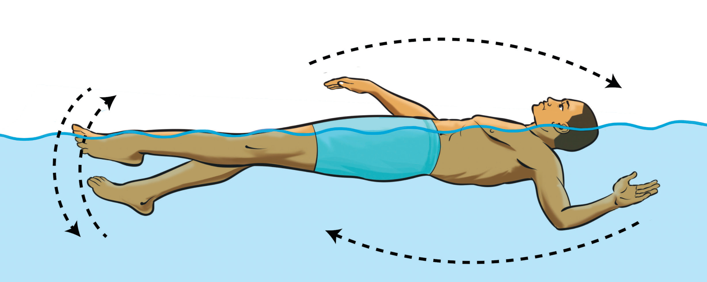

Breaststroke
This is a swimming stroke executed in a prone position by coordinating a kick where the legs are brought forward with the knees together and the feet are turned outward and whipped back with a glide and a backward sweeping movement of the arms. Breaststroke is one of the oldest and most widely practiced swimming strokes. It is characterized by controlled, powerful movements that emphasize efficiency rather than speed. This stroke requires precise coordination between the arms, legs, and breathing to maintain a smooth, rhythmic motion. The following steps will help you practice breaststroke:
-
(i)Push the feet off the wall with face down, body straight extending arms forward, hands together, and head in line with your body;
-
(ii)Move the arms in a circular, scooping motion in front of the body by extending your arms forward, then pulling them outward and back toward the chest in a sweeping motion, creating propulsion. Keep the hands close together at the start of the stroke to reduce drag;
-
(iii)Perform a frog kick by bending the knees, pushing the feet outward in a circular motion, and bringing them back together; and
-
(iv)Breath during each stroke cycle, as you lift the head above the water when pulling the arms back. After inhaling, exhale it out while submerging again, ensuring a smooth transition between strokes. Proper timing of breathing helps maintain momentum and prevents fatigue, Figure 3.21.
SPORTS STUDIES FORM TWO.indd 92
9/17/25 9:54 AM